Quick startMula pantas
Five steps to have the display ready for candidates.
Lima langkah untuk menyediakan paparan bagi calon.
- 1
Open countdown.syazr.com on the computer connected to the projector.
Buka countdown.syazr.com di komputer yang disambung ke projektor.
- 2
Press Settings. Add one page for each paper with its title, notes and countdowns.
Tekan Tetapan. Tambah satu halaman bagi setiap kertas, lengkap dengan tajuk, catatan dan countdown.
- 3
Press Phone remote and scan the QR code with your phone.
Tekan Kawal dari telefon dan imbas kod QR dengan telefon anda.
- 4
Press Full screen. This also turns on the sound.
Tekan Skrin penuh. Ini juga mengaktifkan bunyi.
- 5
When the exam begins, press Start all, on the computer or your phone.
Bila peperiksaan bermula, tekan Mula semua, di komputer atau telefon.
1
Before the examSebelum peperiksaan
Set everything up the day before or before candidates enter. Everything you type is saved automatically.
Sediakan semuanya sehari sebelum atau sebelum calon masuk. Semua yang anda taip disimpan secara automatik.
Sessions and pagesSesi dan halaman
A session holds one exam event, for example Final Exam 2026. Inside it, add one page for each paper, such as Mathematics Paper 1 and Mathematics Paper 2. On the day you move from paper to paper with Next.
Satu sesi mewakili satu acara peperiksaan, contohnya Peperiksaan Akhir Tahun 2026. Di dalamnya, tambah satu halaman bagi setiap kertas, seperti Matematik Kertas 1 dan Matematik Kertas 2. Pada hari peperiksaan, anda bertukar dari kertas ke kertas dengan Seterusnya.
- Open Settings. The row of pages sits at the top; press + Page to add one.
- Sessions are at the top right of Settings. Open the session list and choose + New session to start a blank one.
- The ⋯ button beside the list lets you Rename, Duplicate or Delete the session.
- Buka Tetapan. Senarai halaman berada di bahagian atas; tekan + Halaman untuk menambah.
- Sesi berada di penjuru kanan atas Tetapan. Buka senarai sesi dan pilih + Sesi baru untuk mula sesi kosong.
- Butang ⋯ di sebelah senarai digunakan untuk Namakan semula, Salin atau Padam sesi.
Title, notes and footerTajuk, catatan dan footer
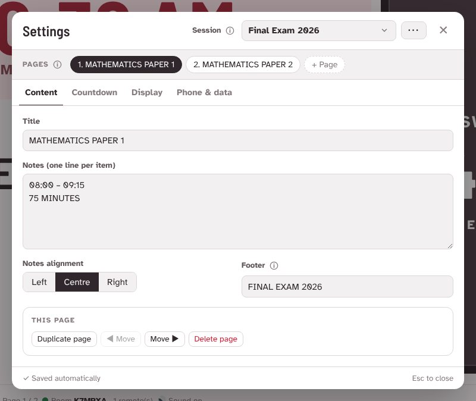
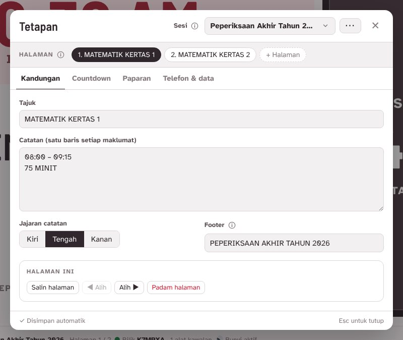
- Title appears large in the middle of the screen, for example MATHEMATICS PAPER 1.
- Notes are smaller and grey. Put each item on its own line: the time, the duration, instructions.
- Footer is a small line at the bottom, such as the exam name.
- Use Duplicate page to copy a page with all its countdowns, then change only what differs.
- Tajuk dipaparkan besar di tengah skrin, contohnya MATEMATIK KERTAS 1.
- Catatan lebih kecil dan berwarna kelabu. Letak setiap maklumat pada baris sendiri: masa, tempoh, arahan.
- Footer ialah baris kecil di bahagian bawah, seperti nama peperiksaan.
- Gunakan Salin halaman untuk menyalin halaman berserta countdownnya, kemudian ubah yang berbeza sahaja.
CountdownsCountdown
New pages start with no countdowns. In the Countdown tab, press + Add countdown. Each page can have up to three, shown as equal boxes in the dark panel on the right of the display.
Halaman baru bermula tanpa countdown. Dalam tab Countdown, tekan + Tambah countdown. Setiap halaman boleh ada sehingga tiga, dipaparkan sebagai kotak sama saiz dalam panel gelap di sebelah kanan paparan.
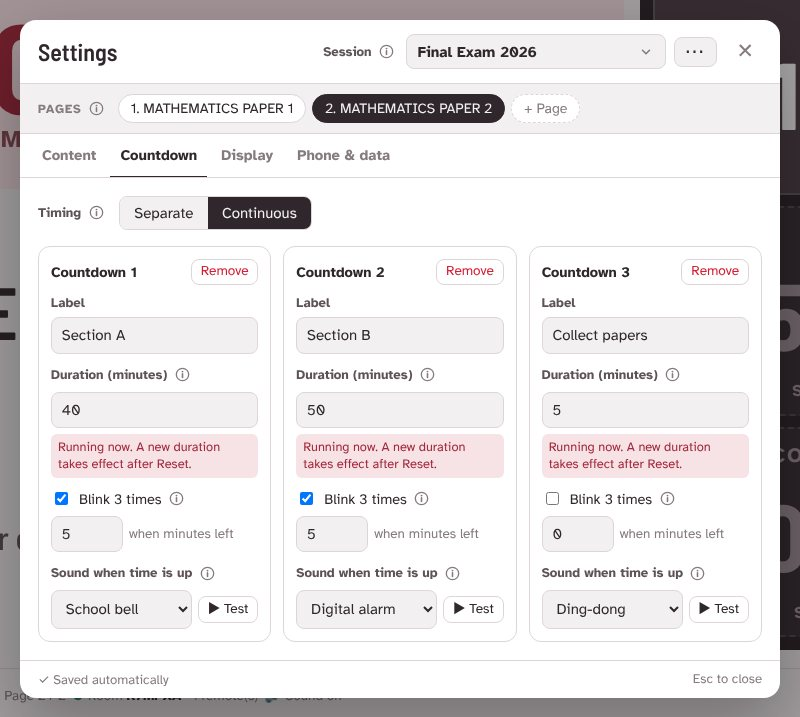
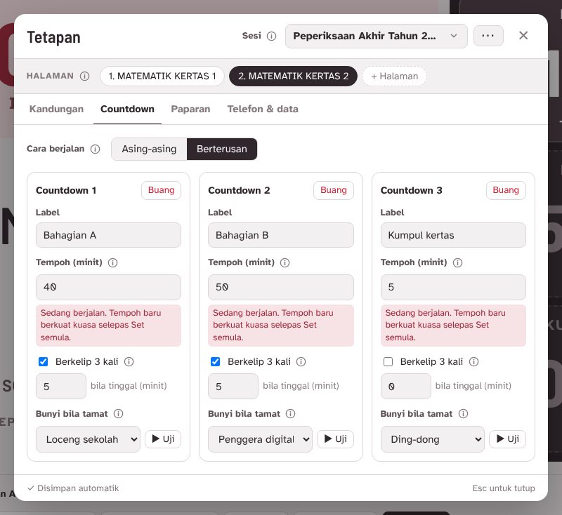
- LabelLabel
- The name above the time, for example Section A or Collect papers.Nama di atas masa, contohnya Bahagian A atau Kumpul kertas.
- DurationTempoh
- Length in minutes. Times over an hour show as 1:15:00.Panjang dalam minit. Lebih sejam dipaparkan sebagai 1:15:00.
- Blink 3 timesBerkelip 3 kali
- The box flashes red three times when the minutes you choose are left, and again when time is up. Set 0 to flash only at the end.Kotak berkelip merah tiga kali bila tinggal minit yang anda pilih, dan sekali lagi bila masa tamat. Letak 0 untuk berkelip hanya bila tamat.
- SoundBunyi
- Plays once on the display when time is up. Press ▶ Test to hear it first, or choose No sound.Dimainkan sekali di paparan bila masa tamat. Tekan ▶ Uji untuk mendengarnya dahulu, atau pilih Tiada bunyi.
Separate or ContinuousAsing-asing atau Berterusan
With two or more countdowns, choose how they run with Timing:
Bila ada dua atau lebih countdown, pilih cara ia berjalan melalui Cara berjalan:
SeparateAsing-asingdefaultdefault
Each countdown runs on its own. Use it when sections start at the same time, or when you want to start each one yourself.
Setiap countdown berjalan sendiri. Sesuai bila semua bahagian bermula serentak, atau bila anda mahu memulakan setiap satu sendiri.
ContinuousBerterusan
When one ends, the next starts straight away, in order. Press Start all once and the whole paper runs by itself.
Bila satu tamat, yang seterusnya bermula serta-merta mengikut turutan. Tekan Mula semua sekali dan seluruh kertas berjalan sendiri.
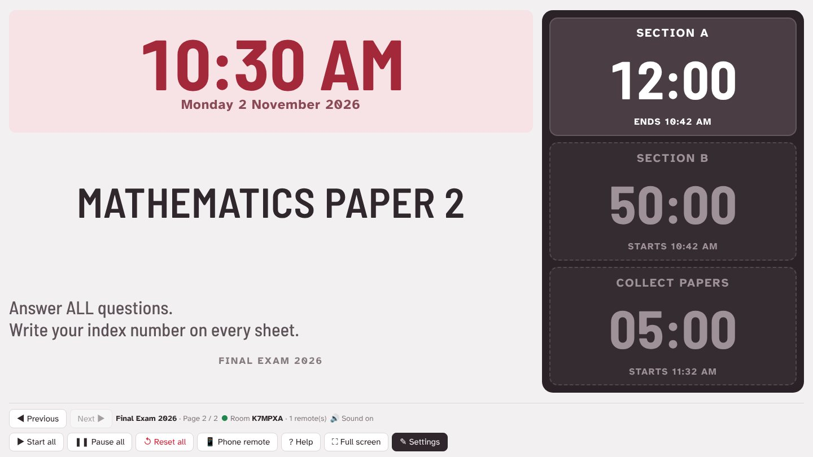
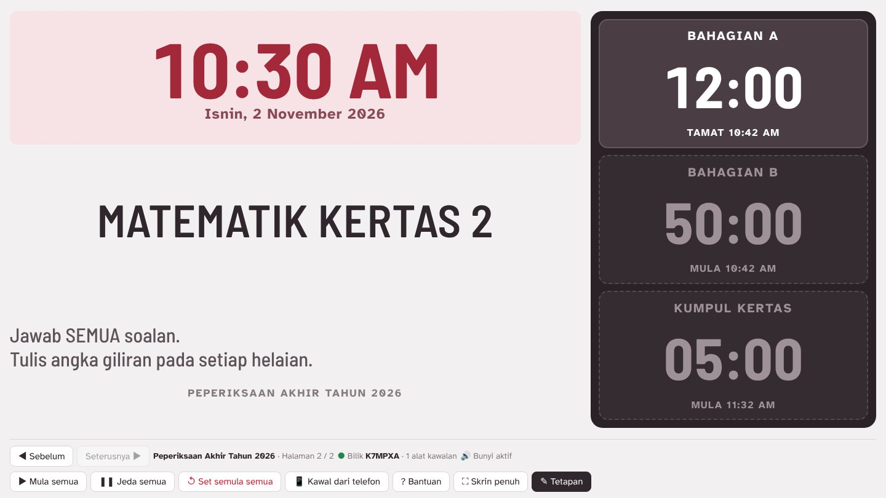
Display optionsPilihan paparan
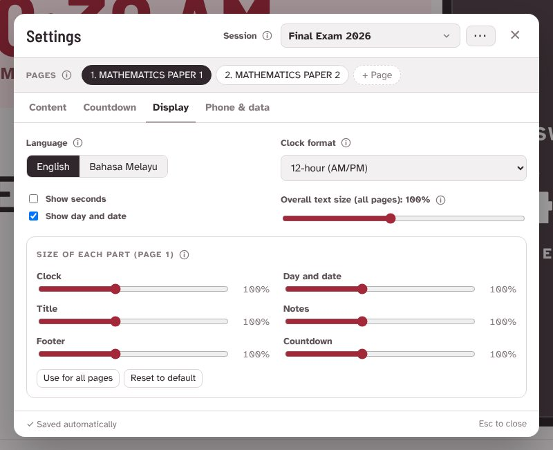
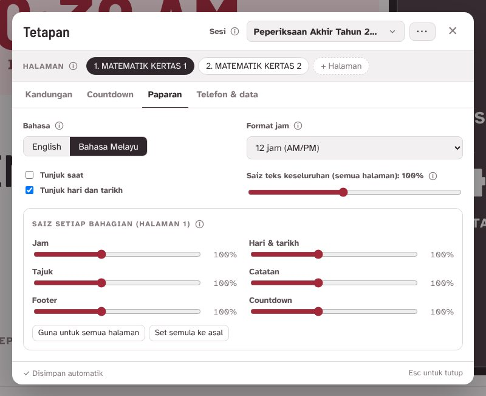
Overall text size makes everything on every page larger or smaller together. Raise it for a big hall.
Saiz teks keseluruhan membesarkan atau mengecilkan semua teks pada semua halaman serentak. Naikkan untuk dewan besar.
Size of each part sets the clock, date, title, notes, footer and countdowns separately, for the page you are on. A part you make bigger also gets more room on the screen, so nothing is cut off. Hold a slider while you drag it and the window turns see-through, so you can watch the display change.
Saiz setiap bahagian mengubah saiz jam, tarikh, tajuk, catatan, footer dan countdown secara berasingan, bagi halaman yang sedang dibuka. Bahagian yang dibesarkan turut mendapat lebih ruang di skrin, jadi tiada teks terpotong. Tahan gelangsar semasa menariknya dan tetingkap menjadi lutsinar, supaya anda nampak paparan berubah.
- Use for all pages copies these sizes to every page in the session.
- Reset to default puts this page back to 100%.
- Guna untuk semua halaman menyalin saiz ini ke setiap halaman dalam sesi.
- Set semula ke asal mengembalikan halaman ini ke 100%.
2
In the exam hallDi dewan peperiksaan
- Open countdown.syazr.com on the computer connected to the projector. Your sessions are already there.
- Go to the first paper with Previous and Next, or by choosing it in Settings.
- Turn off the computer's sleep and screen saver.
- Buka countdown.syazr.com di komputer yang disambung ke projektor. Sesi anda sudah sedia ada.
- Pergi ke kertas pertama dengan Sebelum dan Seterusnya, atau dengan memilihnya dalam Tetapan.
- Matikan mod tidur dan penyelamat skrin komputer.
Connect your phoneSambung telefon anda
With your phone you can change pages and start or pause countdowns from anywhere in the hall.
Dengan telefon, anda boleh tukar halaman dan mula atau jeda countdown dari mana-mana sudut dewan.
- On the display, press Phone remote. A QR code and a 6-character room code appear.
- Scan the QR code with your phone camera. Or open countdown.syazr.com/kawal and type the code.
- The QR window closes by itself once your phone connects. Your phone shows ● Display connected.
- Di paparan, tekan Kawal dari telefon. Kod QR dan kod bilik 6 aksara akan muncul.
- Imbas kod QR dengan kamera telefon. Atau buka countdown.syazr.com/kawal dan taip kodnya.
- Tetingkap QR tertutup sendiri bila telefon bersambung. Telefon akan menunjukkan ● Projektor bersambung.
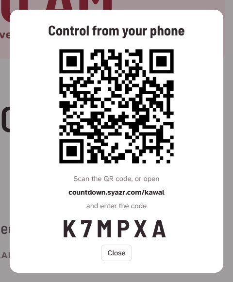
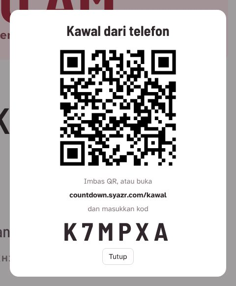
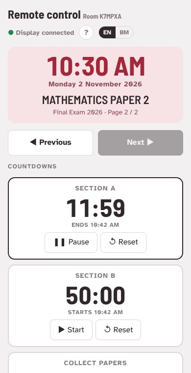
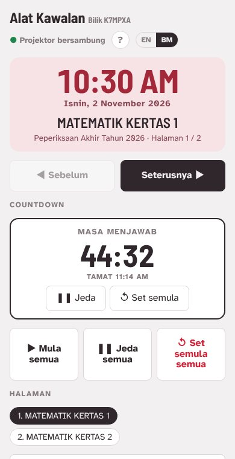
Sound and full screenBunyi dan skrin penuh
Press Full screen on the display computer. The buttons hide so candidates see only the clock and countdowns. Move the mouse to bring them back for a few seconds. Pressing Full screen also turns on the sound: browsers block sound until the page is clicked once.
Tekan Skrin penuh di komputer paparan. Butang disembunyikan supaya calon hanya nampak jam dan countdown. Gerakkan tetikus untuk paparkan semula butang selama beberapa saat. Menekan Skrin penuh juga mengaktifkan bunyi: browser menyekat bunyi sehingga halaman diklik sekali.
3
During the examSemasa peperiksaan
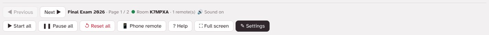
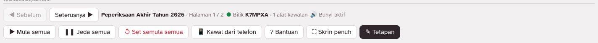
- Start allMula semua
- Starts every countdown on the page, or resumes paused ones.Memulakan setiap countdown pada halaman, atau menyambung yang dijeda.
- Pause allJeda semua
- Stops the countdowns and keeps the time left, for example during a power cut.Menghentikan countdown dan menyimpan baki masa, contohnya semasa bekalan elektrik terputus.
- Reset allSet semula semua
- Puts every countdown back to its full time. Press twice to confirm, so it is never pressed by mistake.Mengembalikan setiap countdown ke tempoh penuh. Tekan dua kali untuk sahkan, supaya tidak tertekan secara tidak sengaja.
- Previous / NextSebelum / Seterusnya
- Moves between papers. Countdowns on other pages keep running.Bertukar antara kertas. Countdown pada halaman lain terus berjalan.
On your phone, each countdown also has its own Start, Pause and Reset buttons.
Di telefon, setiap countdown juga ada butang Mula, Jeda dan Set semula tersendiri.
What the countdown boxes showMaksud paparan kotak countdown
- ReadySediaSet up but not started. Shown dimmed.Sudah disediakan tetapi belum dimulakan. Dipaparkan pudar.
- Ends 11:14 AMTamat 11:14 AMRunning. The brightest card, with the exact time it ends.Sedang berjalan. Kad paling terang, dengan masa tamat yang tepat.
- Starts 10:42 AMMula 10:42 AMContinuous timing only: waiting for the one before it to finish.Mod Berterusan sahaja: menunggu countdown sebelumnya tamat.
- PausedDijedaStopped part-way. Press Start all to carry on from where it stopped.Dihentikan sementara. Tekan Mula semua untuk sambung dari baki masa.
- Time's upMasa tamatFinished. The digits turn red and stay at 00:00.Sudah tamat. Angka bertukar merah dan kekal 00:00.
Keyboard shortcutsPintasan papan kekunci
Handy when the display is in full screen. A presentation clicker also works: its next and back buttons change pages.
Berguna semasa paparan dalam skrin penuh. Alat klik pembentangan juga boleh digunakan: butang next dan back menukar halaman.
| KeyKekunci | What it doesFungsi |
|---|---|
| → Page Down | Next pageHalaman seterusnya |
| ← Page Up | Previous pageHalaman sebelum |
| S | Start or resume all countdownsMula atau sambung semua countdown |
| P | Pause all countdownsJeda semua countdown |
| F | Full screen on or offSkrin penuh hidup atau mati |
| E | Open or close SettingsBuka atau tutup Tetapan |
| Esc | Close a window, or leave full screenTutup tetingkap, atau keluar dari skrin penuh |
4
After the examSelepas peperiksaan
- Reset all puts the countdowns back to their full time, ready for the next group.
- For the next exam, open Settings, press ⋯ beside the session name and choose Duplicate session, then change the titles and times. Or choose + New session from the session list to start blank.
- To keep a copy, open Settings → Phone & data and press ⬇ Download a copy. Keep the file in Google Drive or email it to yourself. Press ⬆ Open a copy later to add the sessions back.
- Set semula semua mengembalikan countdown ke tempoh penuh, sedia untuk kumpulan seterusnya.
- Untuk peperiksaan seterusnya, buka Tetapan, tekan ⋯ di sebelah nama sesi dan pilih Salin sesi, kemudian ubah tajuk dan masa. Atau pilih + Sesi baru dari senarai sesi untuk bermula kosong.
- Untuk simpanan, buka Tetapan → Telefon & data dan tekan ⬇ Muat turun salinan. Simpan fail itu di Google Drive atau e-mel kepada diri sendiri. Tekan ⬆ Buka fail salinan kemudian untuk menambah semula sesi.
Share sessions with another teacherKongsi sesi dengan guru lain
A share code gives another teacher their own copy of your sessions. The copy is not linked to your screen, so later changes on either side stay separate.
Kod kongsi memberi guru lain salinan sesi anda sendiri. Salinan itu tidak bersambung dengan skrin anda, jadi perubahan kemudian di mana-mana pihak kekal berasingan.
- In Settings → Phone & data, press Share sessions…, tick the sessions to share and choose how long the code works: 1, 2, 3 or 7 days, or No limit.
- Press Create share code. You get an 8-character code such as AB7K-29QD. Press Copy and send it by WhatsApp or email.
- The other teacher types the code under Get sessions with a code, presses Check code, sees what it contains, then presses Add these sessions.
- Your share codes lists every code you made on this computer with the time left. Press Cancel code to stop it working straight away.
- Di Tetapan → Telefon & data, tekan Kongsi sesi…, tanda sesi yang mahu dikongsi dan pilih tempoh kod: 1, 2, 3 atau 7 hari, atau Tiada had.
- Tekan Jana kod kongsi. Anda akan mendapat kod 8 aksara seperti AB7K-29QD. Tekan Salin dan hantar melalui WhatsApp atau e-mel.
- Guru lain menaip kod itu di bahagian Ambil sesi dengan kod, tekan Semak kod, lihat isinya, kemudian tekan Ambil sesi.
- Kod kongsi anda menyenaraikan setiap kod yang dijana di komputer ini berserta baki masa. Tekan Batalkan untuk menghentikannya serta-merta.
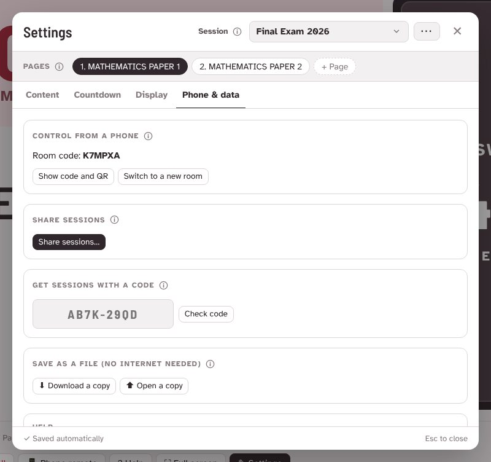
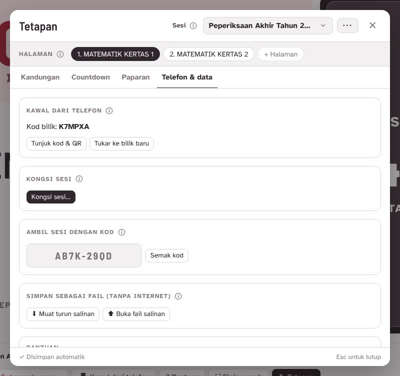
TroubleshootingMasalah biasa
There's no sound when time is upTiada bunyi bila masa tamat
Browsers only allow sound after someone clicks the page. Click anywhere on the display once, or press Full screen. The bottom bar then shows 🔊 Sound on. Check the computer volume and the projector speaker too, and use ▶ Test in Settings → Countdown to try each sound.
Browser hanya membenarkan bunyi selepas halaman diklik. Klik di mana-mana pada paparan sekali, atau tekan Skrin penuh. Bar bawah akan menunjukkan 🔊 Bunyi aktif. Semak juga kelantangan komputer dan pembesar suara projektor, dan gunakan ▶ Uji di Tetapan → Countdown untuk mencuba setiap bunyi.
My phone says the room was not foundTelefon menunjukkan bilik tidak dijumpai
The display must be open first, because it creates the room. Check that the 6-character code on your phone matches the code on the display. If you switched to a new room, scan the new QR code.
Paparan mesti dibuka dahulu kerana ia yang mencipta bilik. Pastikan kod 6 aksara di telefon sama dengan kod di paparan. Kalau anda telah menukar ke bilik baru, imbas kod QR yang baru.
I refreshed the page or closed the tab by accidentSaya tertekan refresh atau tertutup tab
Open the site again on the same computer. Everything comes back as it was: the same page, the same room, and countdowns still running with the correct time left. Phones stay connected.
Buka semula laman di komputer yang sama. Semuanya kembali seperti tadi: halaman yang sama, bilik yang sama, dan countdown terus berjalan dengan baki masa yang betul. Telefon kekal bersambung.
I want to run the same session on another computerSaya mahu guna sesi yang sama di komputer lain
On the new computer, open countdown.syazr.com/?r=CODE, replacing CODE with your 6-character room code. That computer joins your room and shows the same sessions. To give another computer its own copy instead, use Share sessions in Settings → Phone & data.
Di komputer baru, buka countdown.syazr.com/?r=KOD, gantikan KOD dengan kod bilik 6 aksara anda. Komputer itu akan masuk ke bilik anda dan memaparkan sesi yang sama. Untuk memberi komputer lain salinannya sendiri, gunakan Kongsi sesi di Tetapan → Telefon & data.
Someone else is changing my screenOrang lain mengubah paparan saya
Anyone with your room code can control the display. Open Settings → Phone & data and press Switch to a new room. Then reconnect your own phone with the new QR code.
Sesiapa yang tahu kod bilik anda boleh mengawal paparan. Buka Tetapan → Telefon & data dan tekan Tukar ke bilik baru. Kemudian sambung semula telefon anda dengan kod QR yang baru.
The clock shows the wrong timeJam menunjukkan masa yang salah
The clock follows internet server time, not just the computer's own clock, so small errors are corrected automatically. If the hour is wrong, check the computer's time zone is set to Kuala Lumpur (UTC+8).
Jam mengikut masa pelayan internet, bukan hanya jam komputer, jadi ralat kecil dibetulkan secara automatik. Kalau jam salah sejam atau lebih, semak zon waktu komputer ditetapkan kepada Kuala Lumpur (UTC+8).
The screen goes dark during the examSkrin menjadi gelap semasa peperiksaan
Full screen asks the computer to stay awake, but some computers ignore it. Before the exam, turn off sleep and the screen saver in the computer's power settings.
Skrin penuh meminta komputer kekal aktif, tetapi sesetengah komputer mengabaikannya. Sebelum peperiksaan, matikan mod tidur (sleep) dan penyelamat skrin dalam tetapan kuasa komputer.